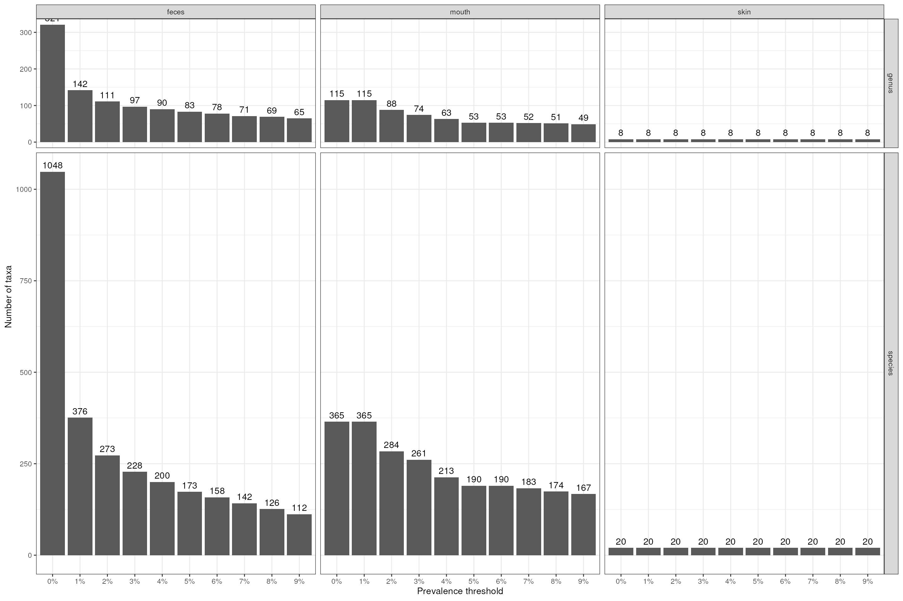
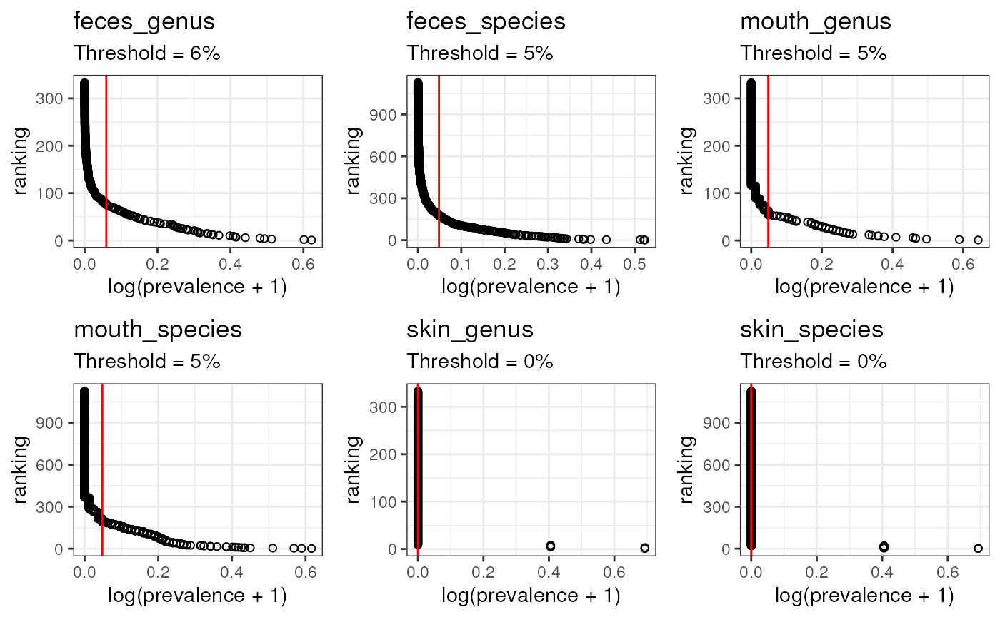

Choosing thresholds for TypicalMicrobiomeSignatures
Source:vignettes/articles/TypicalMicrobiomeSignatures.Rmd
TypicalMicrobiomeSignatures.Rmd
library(bugphyzzAnalyses)
library(dplyr)
library(ggplot2)
library(purrr)
library(tidyr)
library(pathviewr)
library(ggpubr)Data
url <- "https://zenodo.org/records/7622129/files/waldronlab/TypicalMicrobiomeSignaturesExports-v1.0.1.zip?download=1"
temp_dir <- tempdir()
temp_file <- file.path(temp_dir, "tms.zip")
download.file(url = url, destfile = temp_file)
unzip(temp_file, exdir = temp_dir, junkpaths = TRUE)
csv_files <- list.files(temp_dir, pattern = "csv", full.names = TRUE)
csv_data <- map(csv_files, ~ {
.x |>
read.csv() |>
pivot_longer(
names_to = "body site", values_to = "prevalence",
cols = 3:last_col()
) |>
mutate(
`body site` = sub("_(species|genus)_prevalence$", "", `body site`)
)
})
names(csv_data) <- sub("^.*matrix_(.*).csv$", "\\1", csv_files)
tms <- bind_rows(csv_data, .id = "rank_agegroup") |>
separate(
col = "rank_agegroup", into = c("rank", "age group"),
sep = "_", remove = TRUE
) |>
relocate(
`Age group` = `age group`, Rank = rank, `NCBI ID` = NCBI, `Taxon name` = name,
`Body site` = `body site`, Prevalence = prevalence
) |>
# filter(`Age group` == "adult") |>x
mutate(
`Body site` = case_when(
`Body site` == "stool" ~ "feces",
`Body site` == "oralcavity" ~ "mouth",
TRUE ~ `Body site`
)
)
glimpse(tms, width = 50)
#> Rows: 14,016
#> Columns: 6
#> $ `Age group` <chr> "adult", "adult", "adult", …
#> $ Rank <chr> "genus", "genus", "genus", …
#> $ `NCBI ID` <int> 1912216, 1912216, 1912216, …
#> $ `Taxon name` <chr> "Cutibacterium", "Cutibacte…
#> $ `Body site` <chr> "skin", "vagina", "mouth", …
#> $ Prevalence <dbl> 0.9647577093, 0.0631578947,…
vars <- c("Body site", "Rank", "Age group")
map_at(tms[,vars], .at = vars, ~ unique(.x))
#> $`Body site`
#> [1] "skin" "vagina" "mouth" "feces"
#>
#> $Rank
#> [1] "genus" "species"
#>
#> $`Age group`
#> [1] "adult" "child"Separate by body site, rank, and age group
tms_sets_ac <- tms |>
{\(y) split(y, y$`Body site`)}() |>
map(~ split(.x, .x$Rank)) |>
list_flatten() |>
map(~ split(.x, .x$`Age group`)) |>
list_flatten()
data.frame(n_taxa = map_int(tms_sets_ac, nrow))
#> n_taxa
#> feces_genus_adult 540
#> feces_genus_child 333
#> feces_species_adult 1869
#> feces_species_child 1127
#> mouth_genus_adult 540
#> mouth_genus_child 333
#> mouth_species_adult 1869
#> mouth_species_child 1127
#> skin_genus_adult 540
#> skin_genus_child 333
#> skin_species_adult 1869
#> skin_species_child 1127
#> vagina_genus_adult 540
#> vagina_species_adult 1869Let’s compare using the same prevalence threshold:
body_sites <- c("feces", "skin", "vagina", "mouth")
ranks <- c("genus", "species")
grid <- expand.grid(body_site = body_sites, rank = ranks)
combined_vars <- sprintf('%s_%s', grid$body_site, grid$rank)
output <- vector("list", length(combined_vars))
for (i in seq_along(combined_vars)) {
l <- tms_sets_ac[grep(combined_vars[i], names(tms_sets_ac))]
l <- map(l, ~ filter(.x, Prevalence > 0.01))
names(output)[i] <- combined_vars[i]
if (length(l) == 2) {
output[[i]] <- data.frame(
adult = nrow(l[[1]]),
child = nrow(l[[2]]),
inter = length(intersect(l[[1]]$`Taxon name`, l[[2]]$`Taxon name`))
)
} else {
output[[i]] <- data.frame(
adult = nrow(l[[1]])
# child = nrow(l[[2]]),
# inter = length(intersect(l[[1]]$`Taxon name`, l[[2]]$`Taxon name`))
)
}
}
bind_rows(output, .id = "body_site.rank")
#> body_site.rank adult child inter
#> 1 feces_genus 154 142 126
#> 2 skin_genus 212 8 8
#> 3 vagina_genus 89 NA NA
#> 4 mouth_genus 93 115 77
#> 5 feces_species 432 376 313
#> 6 skin_species 582 20 20
#> 7 vagina_species 194 NA NA
#> 8 mouth_species 308 365 262Thresholds for adult age group
Let’s use adult signatures only
thr <- c(0, 0.01, 0.02, 0.03, 0.04, 0.05, 0.06, 0.07, 0.08, 0.09)
tms_sets <- tms_sets_ac[grep("adult$", names(tms_sets_ac))]
names(tms_sets) <- sub("_adult$", "", names(tms_sets))
output <- vector("list", length(tms_sets) * length(thr))
counter <- 1
for (i in seq_along(tms_sets)) {
for (j in seq_along(thr)) {
res <- tms_sets[[i]] |>
filter(Prevalence > thr[j]) |>
count(`Body site`, Rank, name = "n_taxa")
res$thr <- thr[j] * 100
output[[counter]] <- res
counter <- counter + 1
}
}
dat <- bind_rows(output)
head(dat)
#> # A tibble: 6 × 4
#> `Body site` Rank n_taxa thr
#> <chr> <chr> <int> <dbl>
#> 1 feces genus 400 0
#> 2 feces genus 154 1
#> 3 feces genus 132 2
#> 4 feces genus 123 3
#> 5 feces genus 114 4
#> 6 feces genus 109 5
p <- dat |>
mutate(thr = factor(
thr, levels = thr, labels = paste0(thr, "%")
)) |>
ggplot(aes(thr, n_taxa)) +
geom_col(position = position_dodge2(0.9), alpha = 1) +
geom_text(aes(label = n_taxa), position = position_dodge2(0.9), vjust = -0.5) +
facet_grid(Rank ~ `Body site`, scales = "free", space = "free", ) +
labs(x = "Prevalence threshold", y = "Number of taxa") +
theme_bw()
pThresholds for child age group
tms_sets_ch <- tms_sets_ac[grep("child$", names(tms_sets_ac))]
names(tms_sets_ch) <- sub("_child$", "", names(tms_sets_ch))
output <- vector("list", length(tms_sets_ch) * length(thr))
counter <- 1
for (i in seq_along(tms_sets_ch)) {
for (j in seq_along(thr)) {
res <- tms_sets_ch[[i]] |>
filter(Prevalence > thr[j]) |>
count(`Body site`, Rank, name = "n_taxa")
res$thr <- thr[j] * 100
output[[counter]] <- res
counter <- counter + 1
}
}
dat_ch <- bind_rows(output)
head(dat_ch)
#> # A tibble: 6 × 4
#> `Body site` Rank n_taxa thr
#> <chr> <chr> <int> <dbl>
#> 1 feces genus 321 0
#> 2 feces genus 142 1
#> 3 feces genus 111 2
#> 4 feces genus 97 3
#> 5 feces genus 90 4
#> 6 feces genus 83 5
p_ch <- dat_ch |>
mutate(thr = factor(
thr, levels = thr, labels = paste0(thr, "%")
)) |>
ggplot(aes(thr, n_taxa)) +
geom_col(position = position_dodge2(0.9), alpha = 1) +
geom_text(aes(label = n_taxa), position = position_dodge2(0.9), vjust = -0.5) +
facet_grid(Rank ~ `Body site`, scales = "free", space = "free", ) +
labs(x = "Prevalence threshold", y = "Number of taxa") +
theme_bw()
p_ch
Determining thresholds for the adult age group
tms_rankings <- map(tms_sets, ~ {
.x |>
# mutate(norm_p = Prevalence / sum(Prevalence) ) |>
arrange(-Prevalence) |>
# arrange(-norm_p) |>
mutate(
r = row_number(),
# log_p = log(norm_p + 1)
log_p = log(Prevalence + 1)
)
})
elbows <- map(tms_rankings, ~ {
row_n <- .x |>
select(log_p, r) |>
find_curve_elbow(export_type = "row_num") |>
as.integer()
.x |>
slice(row_n) |>
select(Prevalence, log_p)
})
pl <- map2(tms_rankings, elbows, ~ {
.x |>
ggplot(aes(log_p, r)) +
geom_point(shape = 21) +
geom_vline(xintercept = .y$log_p, color = "red") +
labs(
title = paste0(unique(.x$`Body site`), "_", unique(.x$Rank)),
subtitle = paste0("Threshold = ", round(.y$Prevalence * 100), "%"),
y = "ranking", x = "log(prevalence + 1)"
) +
theme_bw()
})
plottt <- ggpubr::ggarrange(plotlist = pl)
plottt
map_dbl(elbows, ~ .x$Prevalence)
#> feces_genus feces_species mouth_genus mouth_species skin_genus
#> 0.04097764 0.04430577 0.01363636 0.01363636 0.07048458
#> skin_species vagina_genus vagina_species
#> 0.07488987 0.02105263 0.01052632Determining threshold for the child age group
tms_rankings_ch <- map(tms_sets_ch, ~ {
.x |>
# mutate(norm_p = Prevalence / sum(Prevalence) ) |>
arrange(-Prevalence) |>
# arrange(-norm_p) |>
mutate(
r = row_number(),
# log_p = log(norm_p + 1)
log_p = log(Prevalence + 1)
)
})
elbows_ch <- map(tms_rankings_ch, ~ {
row_n <- .x |>
select(log_p, r) |>
find_curve_elbow(export_type = "row_num") |>
as.integer()
.x |>
slice(row_n) |>
select(Prevalence, log_p)
})
pl_ch <- map2(tms_rankings_ch, elbows_ch, ~ {
.x |>
ggplot(aes(log_p, r)) +
geom_point(shape = 21) +
geom_vline(xintercept = .y$log_p, color = "red") +
labs(
title = paste0(unique(.x$`Body site`), "_", unique(.x$Rank)),
subtitle = paste0("Threshold = ", round(.y$Prevalence * 100), "%"),
y = "ranking", x = "log(prevalence + 1)"
) +
theme_bw()
})
plottt_ch <- ggpubr::ggarrange(plotlist = pl_ch)
plottt_ch
Above, the threshold for skin was 0, but I don’t think it will be helpful. I’ll used 0.01 instead.
Session info
sessioninfo::session_info()
#> ─ Session info ───────────────────────────────────────────────────────────────
#> setting value
#> version R version 4.3.2 (2023-10-31)
#> os Ubuntu 22.04.3 LTS
#> system x86_64, linux-gnu
#> ui X11
#> language en
#> collate en_US.UTF-8
#> ctype en_US.UTF-8
#> tz Etc/UTC
#> date 2024-02-29
#> pandoc 3.1.1 @ /usr/local/bin/ (via rmarkdown)
#>
#> ─ Packages ───────────────────────────────────────────────────────────────────
#> package * version date (UTC) lib source
#> abind 1.4-5 2016-07-21 [1] RSPM (R 4.3.0)
#> backports 1.4.1 2021-12-13 [1] RSPM (R 4.3.0)
#> broom 1.0.5 2023-06-09 [1] RSPM (R 4.3.0)
#> bslib 0.6.1 2023-11-28 [1] RSPM (R 4.3.0)
#> bugphyzzAnalyses * 0.1.0 2024-02-29 [1] local
#> cachem 1.0.8 2023-05-01 [1] RSPM (R 4.3.0)
#> car 3.1-2 2023-03-30 [1] RSPM (R 4.3.0)
#> carData 3.0-5 2022-01-06 [1] RSPM (R 4.3.0)
#> cli 3.6.2 2023-12-11 [1] RSPM (R 4.3.0)
#> colorspace 2.1-0 2023-01-23 [1] RSPM (R 4.3.0)
#> cowplot 1.1.3 2024-01-22 [1] RSPM (R 4.3.0)
#> desc 1.4.3 2023-12-10 [1] RSPM (R 4.3.0)
#> digest 0.6.34 2024-01-11 [1] RSPM (R 4.3.0)
#> dplyr * 1.1.4 2023-11-17 [1] RSPM (R 4.3.0)
#> evaluate 0.23 2023-11-01 [1] RSPM (R 4.3.0)
#> fansi 1.0.6 2023-12-08 [1] RSPM (R 4.3.0)
#> farver 2.1.1 2022-07-06 [1] RSPM (R 4.3.0)
#> fastmap 1.1.1 2023-02-24 [1] RSPM (R 4.3.0)
#> fs 1.6.3 2023-07-20 [1] RSPM (R 4.3.0)
#> generics 0.1.3 2022-07-05 [1] RSPM (R 4.3.0)
#> ggplot2 * 3.5.0 2024-02-23 [1] RSPM (R 4.3.0)
#> ggpubr * 0.6.0 2023-02-10 [1] RSPM (R 4.3.0)
#> ggsignif 0.6.4 2022-10-13 [1] RSPM (R 4.3.0)
#> glue 1.7.0 2024-01-09 [1] RSPM (R 4.3.0)
#> gtable 0.3.4 2023-08-21 [1] RSPM (R 4.3.0)
#> highr 0.10 2022-12-22 [1] RSPM (R 4.3.0)
#> htmltools 0.5.7 2023-11-03 [1] RSPM (R 4.3.0)
#> jquerylib 0.1.4 2021-04-26 [1] RSPM (R 4.3.0)
#> jsonlite 1.8.8 2023-12-04 [1] RSPM (R 4.3.0)
#> knitr 1.45 2023-10-30 [1] RSPM (R 4.3.0)
#> labeling 0.4.3 2023-08-29 [1] RSPM (R 4.3.0)
#> lifecycle 1.0.4 2023-11-07 [1] RSPM (R 4.3.0)
#> magrittr 2.0.3 2022-03-30 [1] RSPM (R 4.3.0)
#> memoise 2.0.1 2021-11-26 [1] RSPM (R 4.3.0)
#> munsell 0.5.0 2018-06-12 [1] RSPM (R 4.3.0)
#> pathviewr * 1.1.7 2023-03-08 [1] RSPM (R 4.3.0)
#> pillar 1.9.0 2023-03-22 [1] RSPM (R 4.3.0)
#> pkgconfig 2.0.3 2019-09-22 [1] RSPM (R 4.3.0)
#> pkgdown 2.0.7 2022-12-14 [1] RSPM (R 4.3.0)
#> purrr * 1.0.2 2023-08-10 [1] RSPM (R 4.3.0)
#> R6 2.5.1 2021-08-19 [1] RSPM (R 4.3.0)
#> ragg 1.2.7 2023-12-11 [1] RSPM (R 4.3.0)
#> rlang 1.1.3 2024-01-10 [1] RSPM (R 4.3.0)
#> rmarkdown 2.25 2023-09-18 [1] RSPM (R 4.3.0)
#> rstatix 0.7.2 2023-02-01 [1] RSPM (R 4.3.0)
#> sass 0.4.8 2023-12-06 [1] RSPM (R 4.3.0)
#> scales 1.3.0 2023-11-28 [1] RSPM (R 4.3.0)
#> sessioninfo 1.2.2 2021-12-06 [1] RSPM (R 4.3.0)
#> stringi 1.8.3 2023-12-11 [1] RSPM (R 4.3.0)
#> stringr 1.5.1 2023-11-14 [1] RSPM (R 4.3.0)
#> systemfonts 1.0.5 2023-10-09 [1] RSPM (R 4.3.0)
#> textshaping 0.3.7 2023-10-09 [1] RSPM (R 4.3.0)
#> tibble 3.2.1 2023-03-20 [1] RSPM (R 4.3.0)
#> tidyr * 1.3.1 2024-01-24 [1] RSPM (R 4.3.0)
#> tidyselect 1.2.0 2022-10-10 [1] RSPM (R 4.3.0)
#> utf8 1.2.4 2023-10-22 [1] RSPM (R 4.3.0)
#> vctrs 0.6.5 2023-12-01 [1] RSPM (R 4.3.0)
#> withr 3.0.0 2024-01-16 [1] RSPM (R 4.3.0)
#> xfun 0.42 2024-02-08 [1] RSPM (R 4.3.0)
#> yaml 2.3.8 2023-12-11 [1] RSPM (R 4.3.0)
#>
#> [1] /usr/local/lib/R/site-library
#> [2] /usr/local/lib/R/library
#>
#> ──────────────────────────────────────────────────────────────────────────────